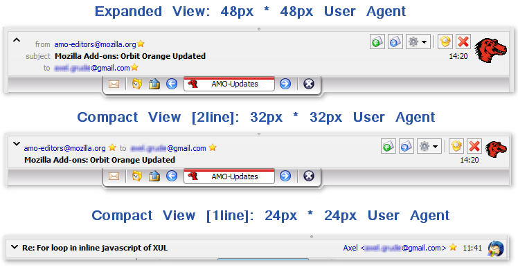

QuickFolders.org
| Home Installation Version History Premium Functions FAQ + Tips Support QuickFolders! Screenshots Bugs + Feature Requests quickFilters Menu On Top GDPR + Impressum |
Installation
Here is a short video tutorial showing the quickest way to get and install QuickFolders.
To download the latest released version of QuickFolders, head on over to Thunderbird Add-Ons: Quickfolders
Download current Version of Quickfolders
Please note that the review process is done by volunteers at Mozilla,
so it can take weeks until the latest version is actually visible on the the
main Mozilla Addons page.
On the Mozilla Addons Page, you can always scroll down and look for the
View all versions link to find the latest version :)
Source Code
The QuickFolders source code can be accessed through one of the following ways:
- View the source at GitHub
- Use Git or checkout with SVN using the web URL
- Get a local copy of the source by performing the following:
svn co https://github.com/RealRaven2000/RealRaven2000/
If you build your own version, make sure to create a zip archive of all files and folders including install.rdf. Rename the file with the extension xpi (instead of zip). Pull the extension into your Application's addon Manager. To avoid confusion, it is a good idea to change the following entry in install.rdf every time you build a new version:
em:version="4.7pre10"
I typically increase the prerelease number (after pre) every time I build, in this way I know which other changes are already included.
Subversion client and Help Documentation links:
- Subversion
- Version Control with Subversion (svnbook)
- TortoiseSVN (client)
- RapidSVN (client)
Other Recommended Add-Ons
quickFilters
quickFilters (Thunderbird) Quickly generate mail filters on the fly, by dragging and dropping mails and analyzing their attributes.
QuickPasswords
QuickPasswords; this is a very neat and quick way to retrieve and use a growing number of passwords, without displaying them on screen or having to re-type them.
Zombie Keys
QuickFolders
(Thunderbird / Postbox) takes the pain out of working with many mail folders; has currently 20,000 users and is 3rd of all top rated message reading extensions.
SmartTemplate4
SmartTemplate4 offers an easy way to customize Thunderbirds default quote header by using templates. Templates can be created for every account as well as for global settings (for all email accounts).
Compact Headers Extension
Here is a patched version of the Compact Headers Extension, that allows a better display of the Mail user agent (if DispMua Extension is also installed):
CompactHeader-1.3.0beta7 with improved Display Mail User Agent support - rightclick and save as to install or directly drag into the thunderbird addons window.for this to work you have to install the Display Mail User agent extension. This is what it looks like:
